Club requests¶
Initiating a club request from a catalog search¶
- Search for a title in the staff client
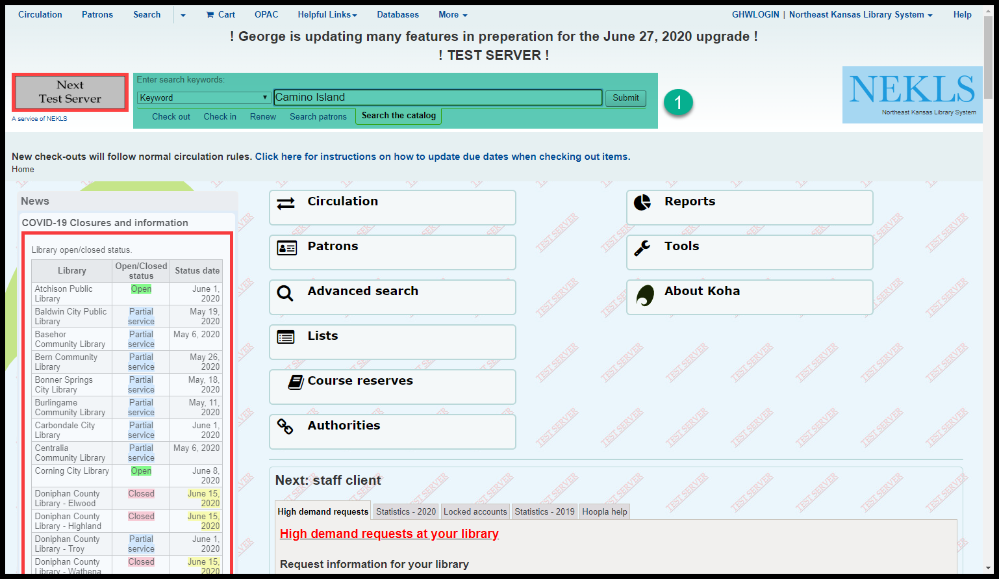
- Go to the holds page for that title
Click on “Holds …” from the search results page
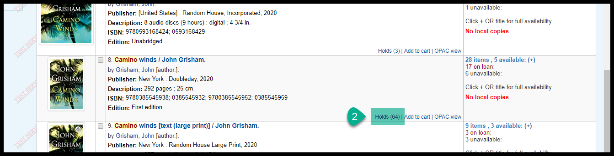Click on the “Place hold” button on the title details page
Click on the “Holds” tab on the title details page
Click on the number next to the “Holds” count
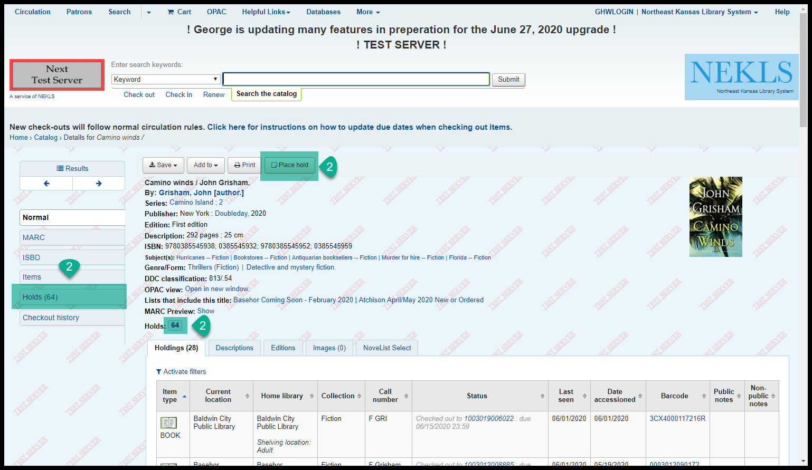
- Click on the “Clubs” tab
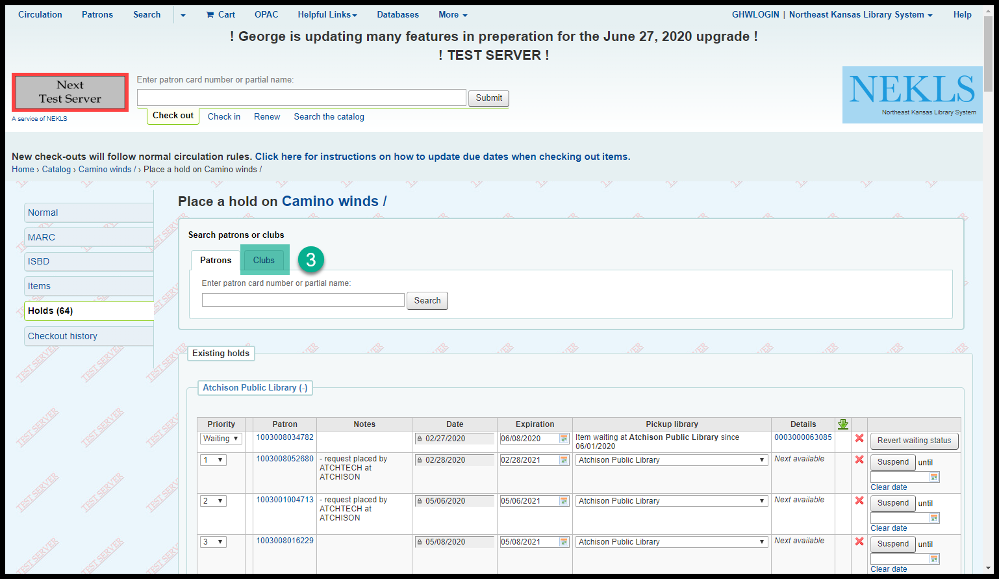
- Enter the club name or ID number and click on “Search”
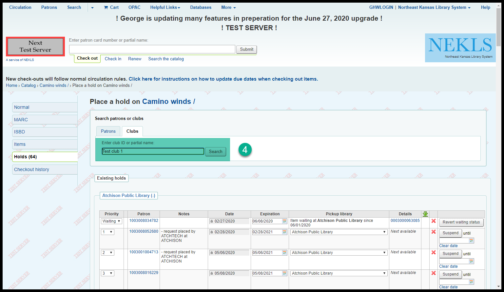
Choose the pickup location and click on “Place hold”
(The pickup location will default to the library you are currently logged in at)
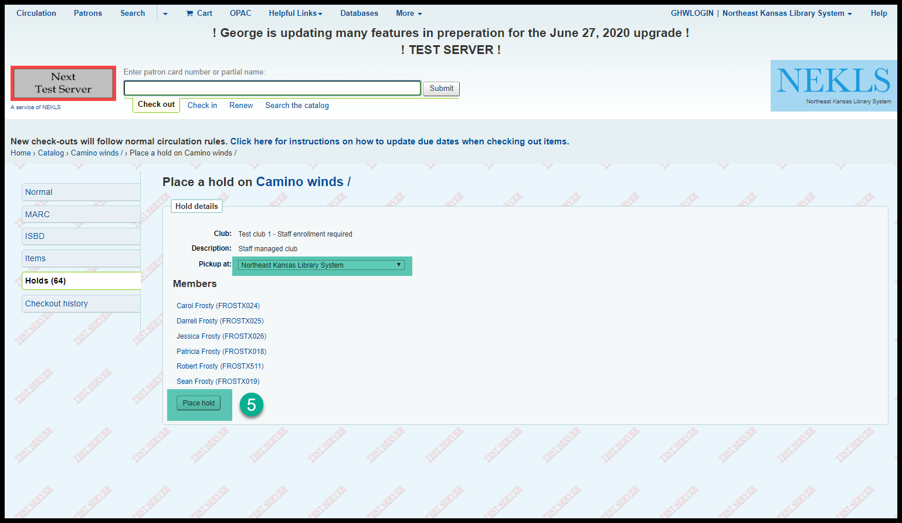
- The requests will be placed on the title in random order
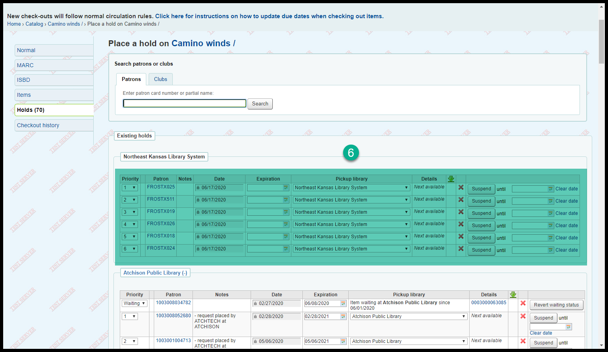
Initiating a club request from the patron clubs tool¶
- From the home page go to “Tools”
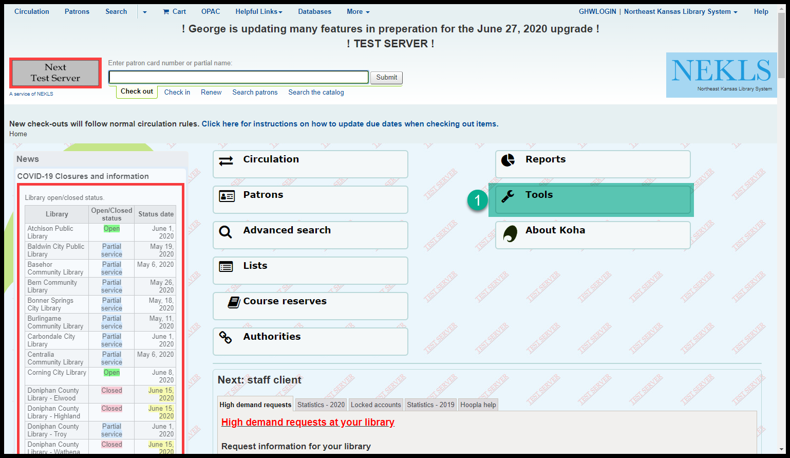
- Then go to “Patron clubs”
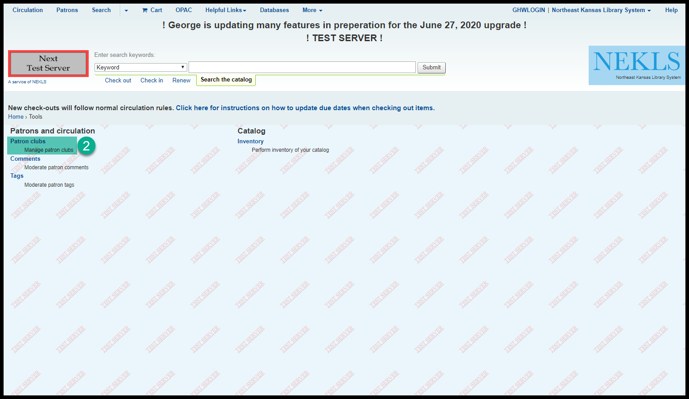
- Then click on “Search to hold” from the action button to the right of the club you’re placing the reqeust for
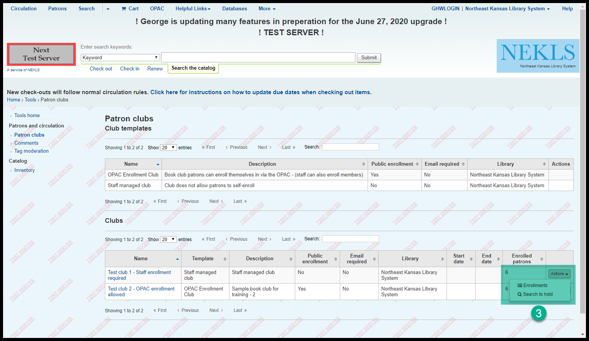
- Search for the title you want to reqeust
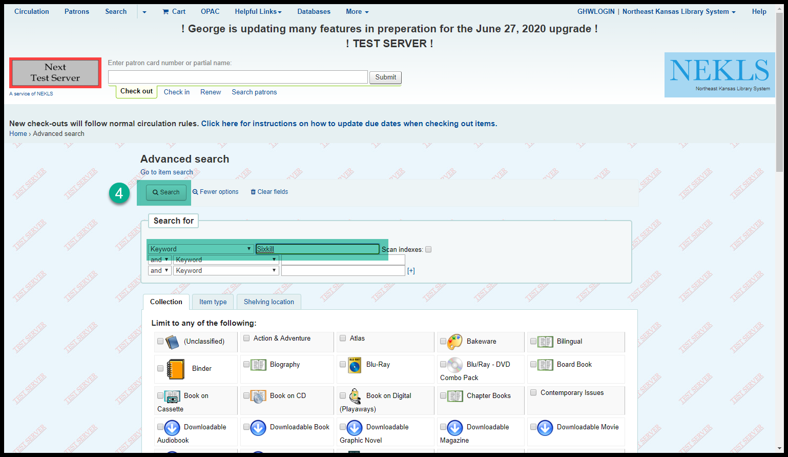
- From the search results, click on “Place hold for … “
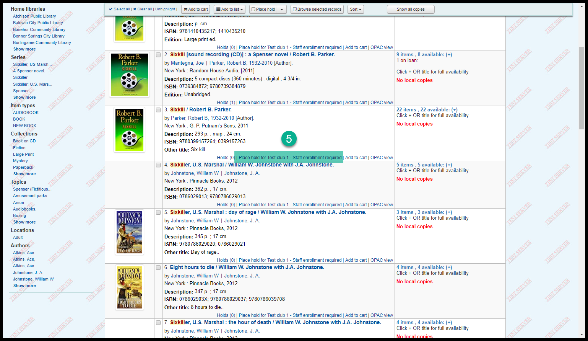
- Choose the pickup location and click on “Place hold”
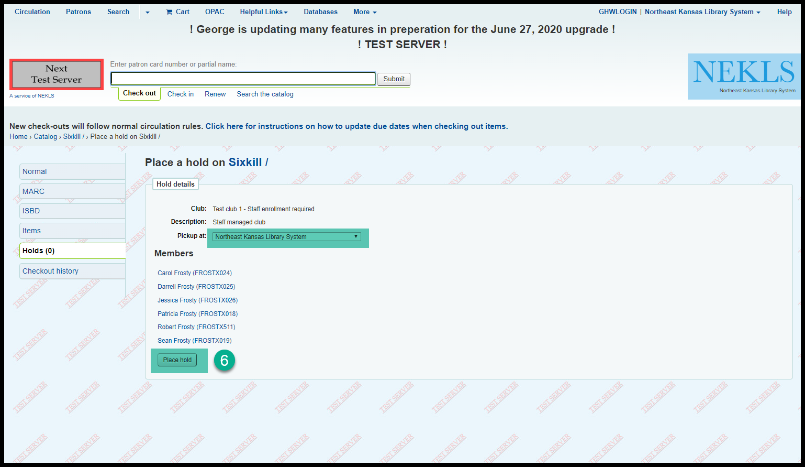(The pickup location will default to the library you are currently logged in at)
- The requests will be placed on the title in random order
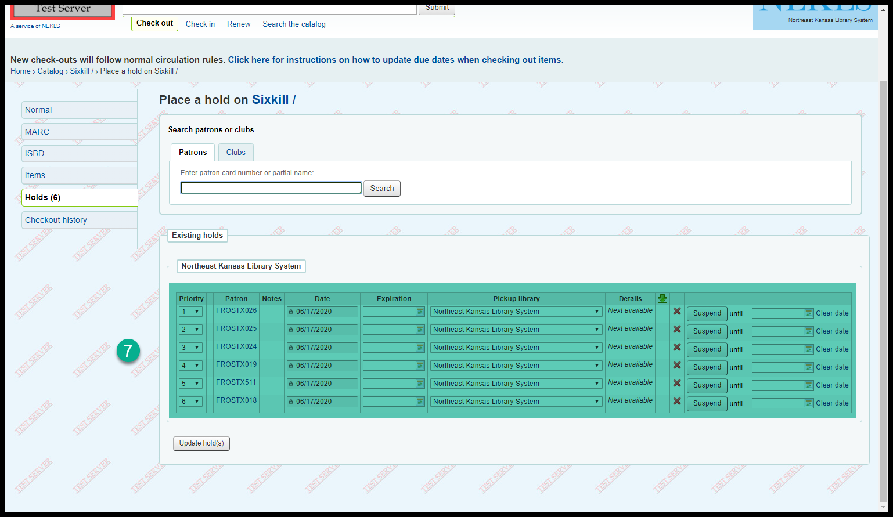Watch a YouTube video about patron changes.